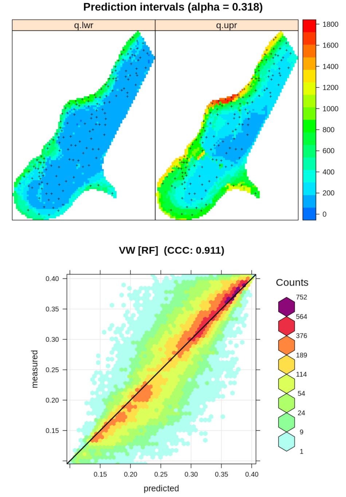

Introduction
Ensemble Machine Learning

 This Rmarkdown tutorial provides practical instructions, illustrated with sample dataset, on how to use Ensemble Machine Learning to generate predictions (maps) from 2D, 3D, 2D+T (spatiotemporal) training (point) datasets. We show functionality to do automated benchmarking for spatial/spatiotemporal prediction problems, and for which we use primarily the mlr framework and spatial packages terra, rgdal and similar..
Ensembles are predictive models that combine predictions from two or more learners (Seni & Elder, 2010; C. Zhang & Ma, 2012). The specific benefits of using Ensemble learners are:
- Performance: they can help improve the average prediction performance over any individual contributing learner in the ensemble.
- Robustness: they can help reduce extrapolation / overshooting effects of individual learners.
- Unbiasness: they can help determine a model-free estimate of prediction errors.
Even the most flexible and best performing learners such as Random Forest or neural networks always carry a bias in the sense that the fitting produces recognizable patterns and these are limited by the properties of the algorithm. In the case of ensembles, the modeling algorithm becomes secondary, and even though the improvements in accuracy are often minor as compared to the best individual learner, there is a good chance that the final EML model will be less prone to overshooting and extrapolation problems.
There are in principle three ways to apply ensembles (C. Zhang & Ma, 2012):
- bagging: learn in parallel, then combine using some deterministic principle (e.g. weighted averaging),
- boosting: learn sequentially in an adaptive way, then combine using some deterministic principle,
- stacking: learn in parallel, then fit a meta-model to predict ensemble estimates,
The “meta-model” is an additional model that basically combines all individual or “base learners”. In this tutorial we focus only on the stacking approach to Ensemble ML.
There are several packages in R that implement Ensemble ML, for example:
- SuperLearner package,
- caretEnsemble package,
- h2o.stackedEnsemble package,
- mlr and mlr3 packages,
Ensemble ML is also available in Python through the scikit-learn library.
In this tutorial we focus primarily on using the mlr package, i.e. a wrapper functions to mlr implemented in the landmap package.
Using geographical distances to improve spatial interpolation
Machine Learning was for long time been considered suboptimal for spatial interpolation problems, in comparison to classical geostatistical techniques such as kriging, because it basically ignores spatial dependence structure in the data. To incorporate spatial dependence structures in machine learning, one can now add the so-called “geographical features”: buffer distance, oblique distances, and/or distances in the watershed, as features. This has shown to improve prediction performance and produce maps that visually appear as they have been produced by kriging (T. Hengl, Nussbaum, Wright, Heuvelink, & Gräler, 2018).
Use of geographical as features in machine learning for spatial predictions is explained in detail in:
- Behrens, T., Schmidt, K., Viscarra Rossel, R. A., Gries, P., Scholten, T., & MacMillan, R. A. (2018). Spatial modelling with Euclidean distance fields and machine learning. European journal of soil science, 69(5), 757-770.
- Hengl, T., Nussbaum, M., Wright, M. N., Heuvelink, G. B., & Gräler, B. (2018). Random forest as a generic framework for predictive modeling of spatial and spatio-temporal variables. PeerJ, 6, e5518. https://doi.org/10.7717/peerj.5518
- Møller, A. B., Beucher, A. M., Pouladi, N., and Greve, M. H. (2020). Oblique geographic coordinates as covariates for digital soil mapping. SOIL, 6, 269–289, https://doi.org/10.5194/soil-6-269-2020
- Sekulić, A., Kilibarda, M., Heuvelink, G.B., Nikolić, M., Bajat, B. (2020). Random Forest Spatial Interpolation. Remote Sens. 12, 1687. https://doi.org/10.3390/rs12101687
In the case the number of covariates / features becomes large, and assuming the covariates are diverse, and that the points are equally spread in an area of interest, there is probably no need for using geographical distances in model training because unique combinations of features become so large that they can be used to represent geographical position (T. Hengl et al., 2018).
Installing the landmap package
To install the most recent landmap package from Github use:
library(devtools)
install_github("envirometrix/landmap")Important literature
For an introduction to Spatial Data Science and Machine Learning with R we recommend studying first:
- Becker, M. et al.: “mlr3 book”;
- Bivand, R., Pebesma, E. and Gómez-Rubio, V.: “Applied Spatial Data Analysis with R”;
- Irizarry, R.A.: “Introduction to Data Science: Data Analysis and Prediction Algorithms with R”;
- Kuhn, M.: “The caret package”;
- Molnar, C.: “Interpretable Machine Learning: A Guide for Making Black Box Models Explainable”;
- Lovelace, R., Nowosad, J. and Muenchow, J.: “Geocomputation with R”;
For an introduction to Predictive Soil Mapping using R refer to https://soilmapper.org.
Machine Learning in python with resampling can be best implemented via the scikit-learn library, which matches in functionality what is available via the mlr package in R.
License

This work is licensed under a Creative Commons Attribution-ShareAlike 4.0 International License.
Acknowledgements
 This tutorial is based on the “R for Data Science”
book by Hadley Wickham and contributors.
This tutorial is based on the “R for Data Science”
book by Hadley Wickham and contributors.
OpenLandMap is a collaborative effort and many people have contributed data, software, fixes and improvements via pull request.
OpenGeoHub is an independent not-for-profit research foundation promoting Open Source and Open Data solutions. These tools were developed primarily for the need of the Geo-harmonizer project and to enable creation of next-generation environmental layers for continental Europe (Bonannella et al., 2022?; Witjes et al., 2022?). EnvirometriX Ltd. is the commercial branch of the group responsible for designing soil sampling designs for the AgriCapture and similar soil monitoring projects.

EcoDataCube.eu project is co-financed by the European Union (CEF Telecom project 2018-EU-IA-0095).
EarthMonitor.org project has received funding from the European Union’s Horizon Europe research an innovation programme under grant agreement No. 101059548.